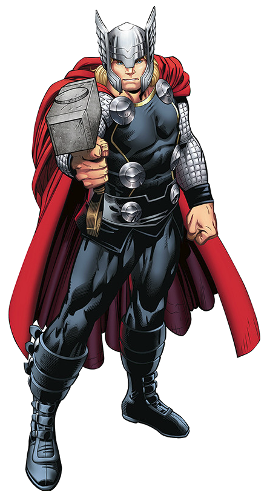

Thor Odinson
Thor nasceu como o Deus do Trovão de Asgard, herdando poderes divinos ligados aos relâmpagos e à força.
O martelo Mjölnir (ou o machado Stormbreaker em fases posteriores), capaz de controlar raios, voar e canalizar enorme poder.

Lida com o peso de proteger os Nove Reinos, perder familiares e provar ser digno de seus poderes.
Embora extremamente poderoso, pode ser afetado por magia, seres cósmicos e, em algumas histórias,
perder acesso ao Mjölnir caso deixe de ser considerado digno.